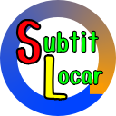
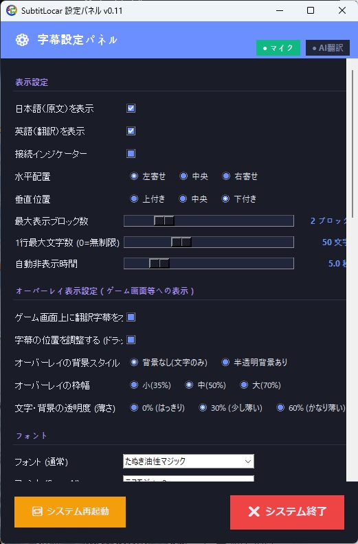
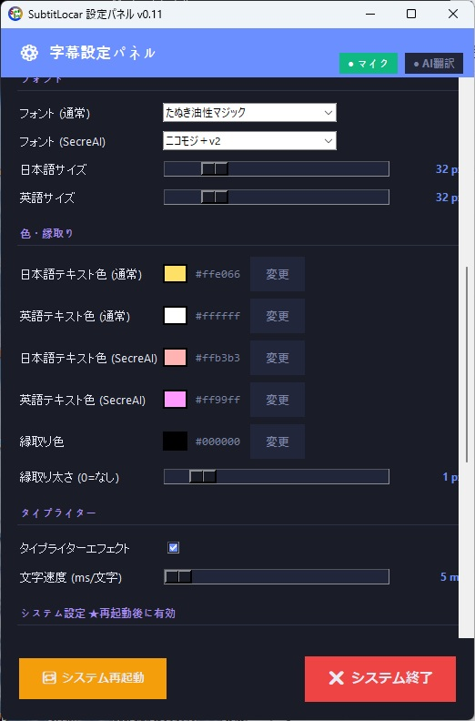
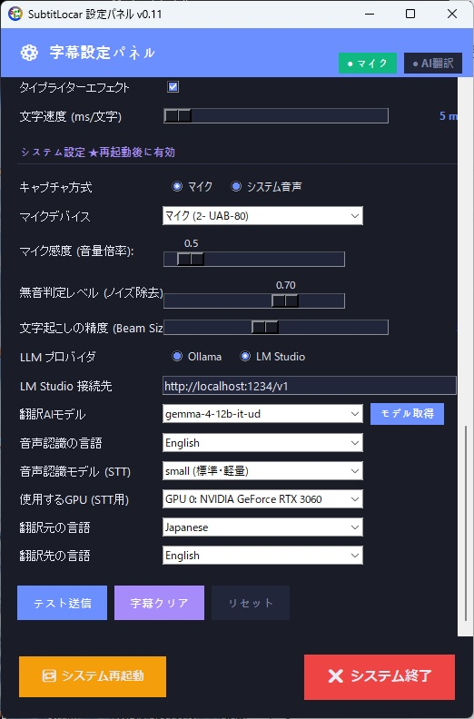

Faster-Whisper（small / large-v3-turbo / large-v3） による高速文字起こしと ローカルLLM（Ollama） による翻訳を融合したリアルタイム字幕システム。
クラウドAPI従量課金ゼロ・完全無制限。OBSブラウザソースでのタイプライター字幕や、ゲーム画面へのクリックスルー透過オーバーレイに対応しています。

Faster-Whisperの文字起こしとOllamaの翻訳結果をリアルタイム表示。

マイク／ループバック（システム音声）の選択やWhisperモデル・LLMをカスタマイズ。

クリックスルー透過、背景透明度、枠幅、フォントサイズなどを動的調整可能。
各画像をクリックすると拡大表示できます
クラウド型ツールの制限やコストを排除し、完全ローカルで安全・無制限に使える実践的な機能を網羅しています。
クラウド音声認識や商用LLMのAPIキーは不要。PCのローカル環境（Ollama + Faster-Whisper）で完結して推論を行うため、従量課金や利用枠、毎月の請求を気にせず何時間でも無制限に字幕を稼働できます。
ゲーム画面や動画プレイヤーの上に直接翻訳字幕をオーバーレイ表示。誤クリックを防ぐクリックスルー（マウスクリック透過）機能を標準搭載し、ドラッグでの位置調整や背景透過度の動的変更に対応しています。
マイクを指定すれば自身のトークをリアルタイム字幕化して配信へ。また、特定の出力デバイス（ループバック）を指定すれば、あなたの言語に非対応の海外映画や洋ゲー、海外配信もリアルタイム字幕付きで快適に楽しめます。
本サイトの主力プロダクト「SecreAI」の読み上げ音声や拡張機能（WebSocket）ともスムーズに連動。AIアシスタントの応答内容を視覚的な字幕として同期表示したり、テキストログを並行して管理できます。
日本語、英語、中国語、韓国語、スペイン語、フランス語、ドイツ語、ロシア語の計8言語に対応。単一言語の翻訳にとどまらず、これらすべての言語間で自由な相互翻訳（どの言語からでもどの言語へも相互変換）が可能です。多言語配信や海外ゲーム、国際的な動画視聴もシームレスにサポートします。
公式GitHubの「5. OBSのブラウザソース設定」に基づいた正確な導入手順です。ブラウザソースとして読み込むことで、タイプライターエフェクト付きのクリアな字幕が配信画面へ滑らかに表示されます。
| 設定項目 | 設定値 |
|---|---|
| ローカルファイル | [チェックを入れる] |
| ファイルパス | <SubtitLocarのディレクトリ>\frontend\subtitle.html |
| 幅 (Width) | 1920 |
| 高さ (Height) | 1080 |
| カスタムCSS | (空欄) |
| OBSが非表示の時にソースをシャットダウン | [チェックを入れる] |
4. 「OK」 を押して保存します。
※SubtitLocar起動後、内蔵WebSocketサーバー（ポート8765）を介してリアルタイムに文字が送信され、自動的にタイプライターアニメーション付きで配信プレビューに描画されます。
OBSなどの配信ソフトを使わずに、ゲームや動画プレイヤーの上に直接字幕をフロート表示させる機能です。
「ゲーム画面上に翻訳字幕をオーバーレイ表示」にチェックを入れると最前面に表示されます。ゲーム中の誤クリックを防ぐため、標準でマウスクリックを透過します。
「字幕の位置を調整する (ドラッグ移動許可)」にチェックを入れると一時的に枠をドラッグ移動できます。移動後は自動保存され、チェックを外すと再びクリックスルーに戻ります。
背景スタイル（文字のみ／半透明背景）、枠幅（小35% / 中50% / 大70%：文字サイズ自動連動）、透明度（0% / 30% / 60%）をラジオボタンから瞬時に切り替え可能です。
OBSでゲーム配信をしながら同一PCでリアルタイム字幕を快適に動かすには、GPU VRAMとコンテキスト負荷を抑えた「軽めのLLMモデル」の選定が極めて重要です（2026年11月現在）。
GPU VRAM 4GB〜6GB / GTX 1660, RTX 3050, 4050 等
VRAM消費を最小限に抑え、音声入力からの推論遅延を極小化。
推奨モデル例: Qwen 3.5 2B、Gemma 4 2B
GPU VRAM 8GB〜12GB / RTX 3060, 4060, 4060 Ti 等
large-v3級の高い認識精度を保ちながら推論が高速化されたターボ版。ゲーム配信に最適な黄金チョイス。
推奨モデル例: TranslateGemma、Qwen 3.5 4B、Gemma 4 4B
GPU VRAM 16GB以上 / RTX 4070 Ti S, 4080, 4090, マルチGPU 等
最高峰の文字起こし性能。雑音や激しいゲーム効果音の中でも極めて正確に認識。
推奨モデル例: TranslateGemma、Gemma 4 12B、Qwen 3.5 7B